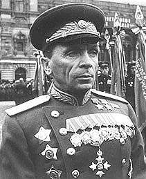

Батов Павел Иванович

Батов Павел Иванович - командующий 65-й армией 1-го Белорусского фронта, генерал-лейтенант; командующий 65-й армией 2-го Белорусского фронта, генерал-полковник.
Родился 20 мая (1 июня) 1987 года в деревне Филисово Рыбинского уезда Ярославской губернии (ныне Рыбинского района Ярославской области). Русский. Из крестьянской бедняцкой семьи.
Окончил двухклассную сельскую начальную школу. С 13 лет жил в Санкт-Петербурге, работал грузчиком и разносчиком, занимался самообразованем. Экстерном сдал экзамены за 6 классов.
В ноябре 1915 года добровольцем вступил в Русскую императорскую армию. Служил в лейб-гвардии 3-м стрелковом полку гвардейской стрелковой бригады. Участник 1-й мировой войны с 1916 года на Северном фронте, команир отделения разведчиков, был раненю За отличия в боях был награждён двумя Георгиевскими крестами и двумя медалями. В 1917 году окончил команду по подготовке к посткплению в Петергофскую школу прапорщиков. Имел чин младшего унтер-офицера.
В Красной Армии с 1917 года. В Гражданскую войну был командиром пулемётного взвода, помощником военного руководителя по маршевым формированиям при Рыбинском военкомате, помощником военного руководителя Резерва командного и начальствующего состава Московского военного округа. Участвовал в подавлении контрреволюцонных выступлений и мятежей в Рыбинске, Ярославле, Пошехонье.
С 1919 года был помощником командира и командиром стрелковой роты. В 1927 году окончил Стрелково-тактические курсы усовершенствования комсостава РККА "Выстрел" имени Коминтерна. С 1924 года командовал батальоном, с 1931 года - наальник штаба полка. Член ВКП(б)/КПСС с 1929 года.
С 1934 года командовал стрелковым полком в 3-й Московской Пролетарской стрелковой дивизии Московского военного округа. В декабре 1936 года - августе 1937 года под псевдонимом "Пабло Фриц" участвовал в национально-революционной войне испанского народа 1936-1939 года в должностях военного советника 12-й интернациональной бригады и советника при командующем Теруэльским фронтом.
По возвращении, с августа 1937 года - командир 10-го стрелкового корпуса, с августа 1938 года - командир 3-го стрелкового корпуса. В 1939-1940 годах участвовал в советско-финляндской войне, командовал 3-м (с декабря 1939) и особым (с 6 марта 1940) стрелковыми корпусами в составе 13-й армии на Карельском перешейке. С апреля по ноябрь 1940 года - заместитель командующего войсками Закавказского военного округа, затем командовал 9-м особым стрелковым корпусом в Крыму, а 20 июня 1941 года одновременно назначен на должность командующего сухопутными войсками в Крыму.
С начала Великой Отечественой войны П.И. Батов командир 9-го особого стрелкового корпуса в Крыму, с августа 1941 года - заместитель командующего 51-й армией Южного фронта, участник оборонительных боёв на Прекопе и в районе Керчи. В ноябре - декабре 1941 года командовал 51-й армией Закавказского фронта (находилась на переформировании на Таманском полуострове). В январе - феврале 1942 года - командующий 3-й армией Брянского фронта. С февраля по октябрь 1942 года исполнял должность помощника командующего войсками Брянского фронта по формированию (утвержден в ней только в сентябре). С 14 по 23 октября 1942 года - командующий 4-й танковой армией, которая затем была переименована в 65-ю армию.
На посту командующего 65-й армией П.И. Батов сражался до конца войны в составе Донского, Сталинградского, Центрального, Белорусского, 1-го и 2-го Белорусских фронтов.
Войска под командованием П.И. Батов в Сталинградской битве героически оборонялись севернее Сталинграда на Дону, а затем отличились при окружении и уничтожении 6-й немецкой армии в Сталинграде. В феврале - марте 1943 года армия вела тяжелые наступательные и оборонительные бои на севском направлении. В Курской битве активно действовала в оборонительной операции Центрального фронта. В сражении за Днепр в августе - сентябре 1943 года 65-я армия за месяц с боями стремительно продвинулась на 300 километров, форсировала реки Десна, Сож, Днепр, освободила города Севск, Глухов и Лоев, героически сражалась на днепровских плацдармах.
"За успешное форсирование реки Днепр, прочное закрепление плацдарма на западном берегу реки Днепр и проявленные при этом отвагу и геройство" Указом Президиума Верховного Совета СССР от 30 октября 1943 года генерал-лейтенанту Павлу Ивановичу Батову присвоено звание Героя Советского Союза с вручением ордена Ленина и медали "Золотая Звезда".
В зимней кампании 1943 - 1944 года войска Батова вновь отличились в Гомельско-Речицкой и Калинковическо-Мозырской наступательных операциях. Командующий 65-й армией П.И. Батов умело применил для поддержки атаки пехоты и танков двойной двойной огневой вал в 1944 году в Бобруйской операци, сыграл решающую роль при уничтожении Бобруйской группировки противника (до 40000 человек), решительно осуществил манёвр войками армии с одного направления на другое в дальнейших сражениях Белорусской стратегической операции, отличился при разгроме войск противника севернее Бреста, при форсировании реки Западный Буг, при захвате и удержании стратегически важныхх плацдармов в районе Сероцка. В Восточно-Прусской операции 65-я армия отличилась при разгроме 2й и 4-й немецкий армий в Млавском и Алленштайнской операции. В Берлинской наступательной операции армия Батова формировала Одер и заняла большие районы в северной Германии, освободигорода Росток и Штеттин. За эту операцию он представлен к награждению второй "Золотой Звездой".
"За образцовое выполнение боевых заданий Командования на фронте борьбы с немецкими захватчиками" Указом Президиума Верховного Совета СССР от 2 июня 1945 года генерал-полковник Павел Иванович Батов награждён второй медалью "Золотая Звезда".
В ходе многочисленных боевых операций проявил себя решительным, энергичным военачальником. Боевые успехи 65-й армии под руководством П.И. Батова 23 раза в годы войны отмесались в приказах Верховного Главнокомандующего.
После войны командовал 7-й механизированной армией, с октября 1946 года - 7-й отдельной танковой дивизией. В 1950 году окончил Высшие академические курсы при Высшей Военно академии имени К.Е. Ворошилова (затм Военной академии Генерального штаба).
C марта 1950 года - командующий 11-й гвардейской армией, с июня 1954 года был первым заместителем главнокомандующего Группой советских войск в Германии. В марте 1955 года назначен командущим войсками Прикарпатского военного округа. С апреля 1958 года командовал войсками Прибалтийского военного округа.
C ноября 1959 года - страрший военный советник в Народно-Освободительной армии Китая. В январе 1961 года П.И. Батов был отправлен на почетную должность военного инспеткора-советника группы генеральных инспекторов министерства обороны СССР. Но скоро был возващён на командную работу и в августе 1961 года назначен командующим Южной группы войск на территории Венгрии. С сентября 1962 года - первй заместитель начальника Генерального штаба Вооруженных участников Варшавского Договора. С октября 1965 года вновь военный инспектор-советник группы генеральных инспекторов Министерства обороны СССР. В 1970 - 1981 годах - председатель Советского комитета ветеранов войны. Депутат Верховного Совета СССР 1, 2, 4, 6-го созывов (1938-1950, 1954-1966).
Скончался 19 апреля 1985 года в Москве. Похоронен на Новодевичьем кладбище (участок 7).
Воинские звания:
полковник (1936,)
комбриг (8.08.1937),
комдив (4.11.1939),
генерал-лейтенант (4.06.1940),
генерал-полковник (29 июня 1944),
генерал армии (10.03.1955).